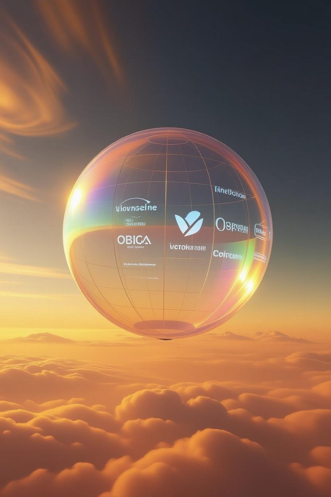

Dreamers and Builders.
A Mission to Venus.
We are NEPHELIS.
AETHER is a probe to Venus, floating where temperature and pressure are Earth-like (50–55 km) to stream back images and data for 30–90 days.
The Mission: Project AETHER
Project AETHER will send Cloudseeker to Venus. It unlocks energy and resources for floating habitats, extending human life and consciousness to another world.
Targeting 50–55 km altitude—Earth-like conditions—Cloudseeker validates habitation models, resource extraction and astrobiology. Launch: 2027.
Be part of humanity's backup plan. Venus ensures life thrives across the solar system.
Venus offers abundant solar power, CO₂ for fuel, nitrogen for breathable air. Join us!
Future VenusExpress concepts with advanced propulsion could cut travel time to 30–45 days (vs. today’s 3–6 months).
PROJECT AETHER
The next great leap for humanity awaits in the clouds of Venus. Project AETHER's 'Cloudseeker' is a pioneering mission to explore the most Earth-like environment in our solar system beyond our own planet. At an altitude of 50-55 km, where the conditions are surprisingly temperate, our miniprobe will validate technologies for habitation, resource extraction, and the search for astrobiology. Launching in 2027, Project AETHER will not just send back data; it will send back a new perspective on our place in the cosmos.
POWERED BY PURPOSE
Project AETHER is a testament to the power of collective passion and ingenuity. We believe that the exploration of space should not be limited to governments. That's why we've opened up this mission to everyone who shares our vision for a multi-planetary future. Your contribution, no matter the size, will be a part of this historic journey to Venus. Together, we can make this audacious dream a reality.
JOIN US →Technology: Cloudseeker
- Acid-Resistant Aerostat: Fluoropolymer balloon; floats at 50–55 km.
- Integrated Sensor Suite: imagery + mass spectrometry + aerosol/bio-sensors.
- 3U CubeSat Relay: high-bandwidth data relay in Venus orbit.
- AI-Optimized Navigation: autonomous ops in dynamic atmosphere.
TECHNOLOGY DEEP DIVE
Cloudseeker is built upon a foundation of robust, cutting-edge technologies designed to withstand the harsh Venusian environment and achieve its ambitious scientific goals.
The Aerostat
An advanced, multi-layered fluoropolymer balloon designed for long-term resistance to sulfuric acid clouds. Its super-pressure design allows it to maintain a stable altitude within the habitable zone.
Science Payload
A compact suite of instruments including a mass spectrometer for atmospheric analysis, nephelometer for cloud density, and specially designed biological sensors to search for complex molecules.
Avionics & Power
A radiation-hardened system manages the AI-optimized navigation and data relay. High-efficiency solar panels woven into the aerostat's upper surface provide continuous power.

Astrophysics & Trajectory
Transfer & Timing
- Profile: Earth→Venus Hohmann-like transfer (outreach model)
- Time of Flight: ~146 days
- LEO→TVI ΔvDelta-v: A measure of the impulse required to perform a maneuver. The 'change in velocity'.: ~3.5 km/s (purchased)
- Onboard Δv: 150–200 m/s (TCMs/margin)
- Arrival: v∞Hyperbolic excess velocity: the velocity of a spacecraft in excess of the escape velocity of a celestial body. ~2.7 km/s; entry ~10.7 km/s; deploy balloon ~55 km
Trajectory Mini-Planner
Atmosphere Model
Comms/Day Estimator
Rocket Equation
The Tsiolkovsky rocket equation calculates the propellant needed for a given change in velocity (Δv), based on engine efficiency (Isp) and mass.
Future on Venus
Why Venus?
With Earth-like gravity and a temperate, 1-bar pressure layer at 50–55 km altitude, Venus is the most practical and resource-rich destination for off-world colonization in our solar system.
Venus complements Mars. At the right altitude, it offers near‑Earth pressure/temperature and abundant solar energy—balanced against acid clouds and power/radiation trade‑offs.
| Aspect | Venus (Cloud Tops) | Mars (Surface) |
|---|---|---|
| Travel Time | ~5 months (current) | 30-45 days (future concept) | ~6-9 months (current) |
| Gravity | 0.904 g (~90% Earth) | 0.38 g (~38% Earth) |
| Habitable Zone Conditions | ~30–70 °C; 0.5–1 bar pressure | ~-60 °C; ~0.006 bar pressure (requires pressure suits/domes) |
| Solar Energy | ~2601 W/m² (1.9x Earth), reduced in clouds | ~590 W/m² (0.43x Earth) |
| Resources | 96.5% CO₂, 3.5% N₂, trace SO₂ | CO₂ atmosphere, polar water ice |
| Key Challenges | Sulfuric acid clouds, material degradation | Cosmic radiation, dust storms, low gravity |
THE 'WHY NOW?' MOMENT
Project AETHER is a mission whose time has come. A convergence of technological and commercial breakthroughs makes private Venus exploration possible for the first time in history.
The Launch Revolution
The rise of affordable and reliable commercial launch providers and their rideshare programs dramatically lowers the cost of access to deep space, making missions like ours financially feasible.
Radical Miniaturization
Thanks to the CubeSat revolution, we can now package a powerful scientific suite, communication systems, and avionics into a small, cost-effective probe without sacrificing capability.
Advances in Material Science
New developments in acid-resistant coatings, flexible solar cells, and lightweight composites are the final key, enabling us to build a probe that can survive for an extended period in the clouds of Venus.
VENUSIAN FUTURE: OUR LONG-TERM HORIZON
Project AETHER is just the beginning. At Nephelis Industries, our vision extends beyond a single mission to the establishment of a permanent human presence in the skies of Venus. We see Venus not as a desolate wasteland, but as the solar system's most promising and resource-rich frontier for off-world development.
Cities in the Clouds: A New Paradigm for Habitation
The future of humanity on Venus lies not on its scorching surface, but in its temperate, Earth-like upper atmosphere. At an altitude of 50-55 km, the pressure is a familiar 1-bar and temperatures range from 0°C to 50°C (32°F to 122°F). Here, we can build floating habitats—aerostats far grander than our initial probes—where humans could live and work, protected from surface extremes and cosmic radiation by the thick atmosphere. These "cloud cities" are not science fiction; they are a practical engineering destination.
Building a Self-Sustaining Economy
A Venusian civilization must be self-sufficient. Nephelis Industries is developing business cases for a vibrant, in-sky economy based on In-Situ Resource Utilization (ISRU):
- Breathable Air: Cracking atmospheric CO₂ to produce oxygen, mixed with readily available nitrogen.
- Water Production: Synthesizing water from atmospheric hydrogen and sulfuric acid.
- Advanced Manufacturing: Leveraging abundant solar power and unique chemical feedstocks.
Nephelis's Role: Building of a New World
Our roadmap is clear. Phase I is Exploration with Project AETHER. Phase II involves launching larger robotic aerostats to prove ISRU technologies at scale. Phase III is the construction of the first modular, human-capable habitat, establishing a permanent scientific and industrial outpost in the clouds of Venus.
Mission Timeline
Mission Diagrams
Venus Orbit & Entry
Venus Cloud Layers
HUMANITY'S JOURNEY TO VENUS
The Pioneers: A Legacy of Venus Exploration
Humanity's fascination with Venus has led to a rich history of exploration. From the first successful flyby by NASA's Mariner 2 in 1962, to the first images from the surface sent back by the Soviet Venera 9 and 10 in 1975, we have been slowly peeling back the layers of our sister planet's mysteries.
The New Wave: A Renewed Focus on Venus
We are at the dawn of a new era of Venus exploration. A fleet of missions is set to launch in the coming years, including NASA's DAVINCI and VERITAS, and the European Space Agency's EnVision. These missions will provide the most comprehensive study of Venus ever undertaken, and Project AETHER is poised to be a key part of this global effort.
| Mission | Agency | Year | Type | Key Achievement |
|---|---|---|---|---|
| Past Missions | ||||
| Venera 1 | Soviet Union | 1961 | Flyby (failed) | First spacecraft launched towards Venus. |
| Mariner 2 | NASA (USA) | 1962 | Flyby | First successful planetary encounter; confirmed high surface temps. |
| Venera 4 | Soviet Union | 1967 | Atmospheric Probe | First probe to enter another planet's atmosphere and return data. |
| Mariner 5 | NASA (USA) | 1967 | Flyby | Collected atmospheric data to complement Venera 4. |
| Venera 7 | Soviet Union | 1970 | Lander | First successful soft landing on another planet. |
| Venera 9 & 10 | Soviet Union | 1975 | Orbiter & Lander | First to transmit images from the surface of Venus. |
| Pioneer Venus 1 & 2 | NASA (USA) | 1978 | Orbiter & Probes | Created the first detailed radar map of the Venusian surface. |
| Vega 1 & 2 | Soviet Union | 1984 | Balloons & Lander | Deployed the first and only weather balloons in Venus's atmosphere. |
| Magellan | NASA (USA) | 1989 | Orbiter | Mapped over 98% of the planet's surface with high-resolution radar. |
| Venus Express | ESA | 2005 | Orbiter | Studied the atmosphere and plasma environment in detail for 8 years. |
| Akatsuki | JAXA (Japan) | 2010 | Orbiter | First Japanese Venus probe; studies atmospheric dynamics. |
| Current & Future Missions | ||||
| BepiColombo | ESA/JAXA | 2018 | Flyby (en route) | Mercury orbiter performing multiple Venus flybys for gravity assists. |
| VERITAS | NASA (USA) | ~2029 | Orbiter | To map Venus's surface geology and understand its evolution. |
| DAVINCI | NASA (USA) | ~2029-30 | Probe & Orbiter | To analyze the atmospheric composition and surface. |
| EnVision | ESA | ~2031 | Orbiter | To study Venus from its inner core to its upper atmosphere. |
| Shukrayaan-1 | ISRO (India) | TBD | Orbiter | Planned Indian mission to study the surface and atmosphere. |
Project AETHER: Our Contribution to the Venusian Frontier
While major space agencies focus on orbital and atmospheric analysis, Project AETHER's 'Cloudseeker' probe will provide a unique, long-duration presence in the Venusian clouds, streaming back invaluable data and imagery that will complement and enhance the findings of these larger missions.
MISSION UPDATES
Follow our journey to Venus. Here are the latest dispatches from the Nephelis team.
Mission Trajectory Finalized
September 22, 2025 | Astrophysics
Working with our partners, we have locked in the final trajectory for our 2027 launch window, optimizing for fuel efficiency and arrival timing.
Venus Today: Daily Fact
Loading today's fascinating fact about Venus...
Funding
Raised: $127,000 / Target: $500,000
ETCH YOUR LEGACY ON A PANEL
From a personal message ($100) to a corporate logo ($10k), your support will be physically integrated into the Cloudseeker probe, orbiting Venus for decades to come.
427 of 500 panels left
IMMORTALIZE YOUR DNA ON VENUS
For a $500 contribution, send us a hair or nail sample. We'll seal it in an inert time capsule aboard the probe, making your biological signature part of an eternal cosmic journey.
Vendors & Partners
Launch via SpaceX rideshare program. Testing: Acid chamber at TBD facility (e.g., Glenn Research Center analogs); thermal-vac at commercial labs. Additional partnerships to be announced soon.
The Team
Nephelis Industries is driven by a passionate group of engineers, scientists and visionaries united by a common goal: to make humanity a multi-planetary species.
Ehren Goossens
Founder & Mission Architect
Frequently Asked Questions
Is this a real mission?
Yes! Nephelis Industries and Project AETHER are a real mission, designed to inspire and build a first step to Venus exploration.
Why not Mars?
While Mars gets a lot of attention, Venus's upper atmosphere offers Earth-like pressure and temperature, plus better protection from solar radiation, making it a compelling alternative for floating habitats.